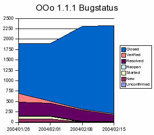

SRX645 OpenOffice.org 1.1.1 preparation
Release of 1.1.1c planned for February 27th (RC Release Candidate)
this should be the final 1.1.1 which is planned for release a week after (March 8th) if no severe problems will be reported.Because of the high amount of issue which are addressed for 1.1.1 release, we want to provide so called "preparation" builds.
Release of 1.1.1b on February 8th
1.1.1b will probably not the final build due to the high amont of open issues for 1.1.1Release of 1.1.1a on December 22nd
this chart contains all issue for 1.1.1 release include issues targeted 1.1.0 and earlier.
Status February 18th : 87 open issues for 1.1.1
536 issues fixed for 1.1.17 open issues
Status December 19th : 87 open issues for 1.1.1
463 issues fixed for 1.1.1Commits on FIX645,
list of integrated cws:
brazilianextras1 calc20 corkfilterteam10 dba01 dr13 draw20 draw21 draw22 droghedafilterteam15 editeng7pp2 fwk01 fwk02 gnomeaccpp1r1 kso8 oj01 ooo111 os16 os21 os22 pp1i18 sab006 sab007 sal06 sb11 sch7pp1 sdk07 setuppp01 setuppp02 setuppp03 sj06 sw02 sw7pp1 sw7pp1a sw7pp1b sw7pp1c sw7pp1neu vcl7pp1r1 vcl7pp1r2 waterfordfilterteam12
Fixed issues on FIX645 ( 194 )
Status November 28th :
145 open issues for 1.1.1394 issues fixed for 1.1.1
Commits on FIX645,
list of integrated cws: corkfilterteam10,draw20,draw21,fwk01,fwk02,kso8,oj01,os16,os21,os22,pp1i18,sab007,sb11,sch7pp1,setuppp01,sw02,sw7pp1,sw7pp1a,sw7pp1b,sw7pp1c,sw7pp1neu,vcl7pp1r1,vcl7pp1r2,waterfordfilterteam12
Fixed issues in FIX645 (85)
note: some important issues like 20181 or reintegration of ooo111fix cws are planned for 1.1.1b